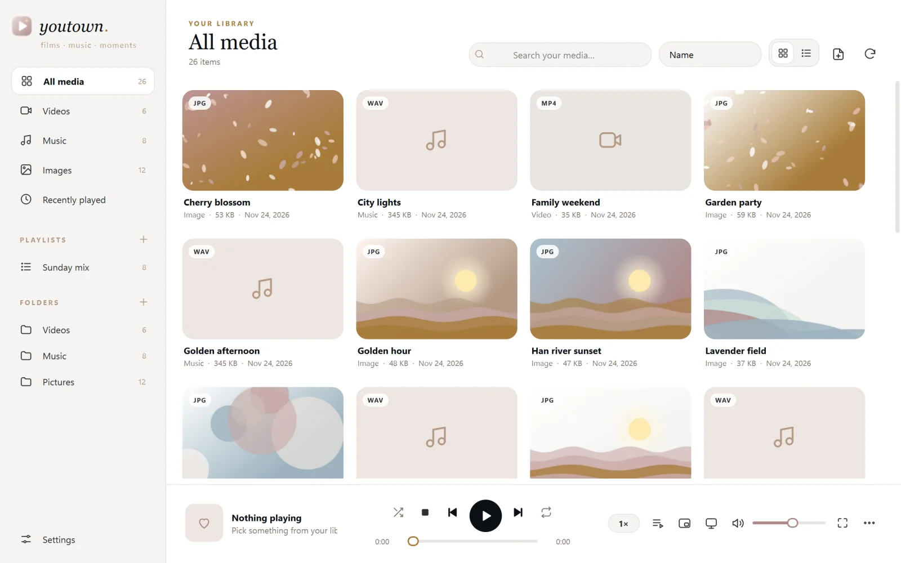
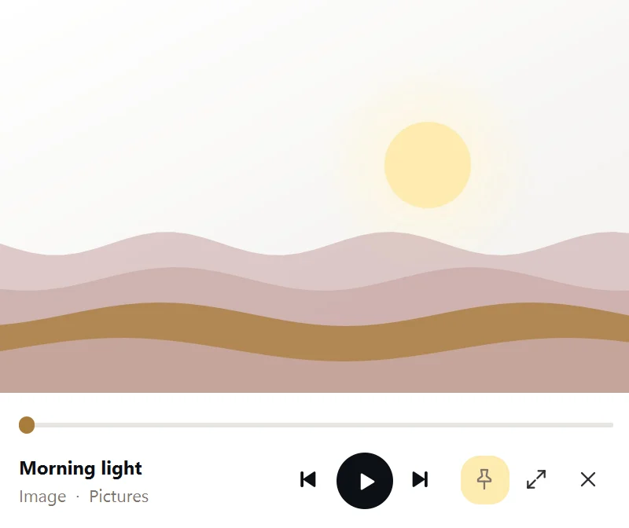
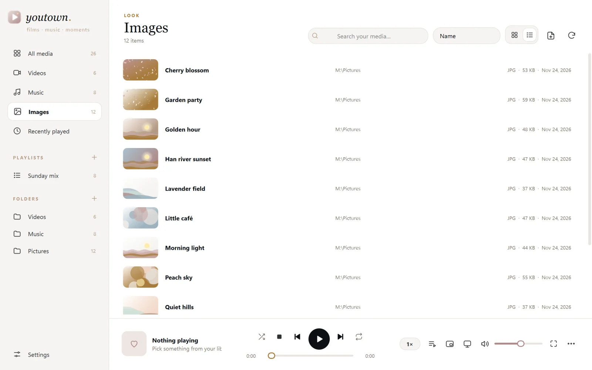
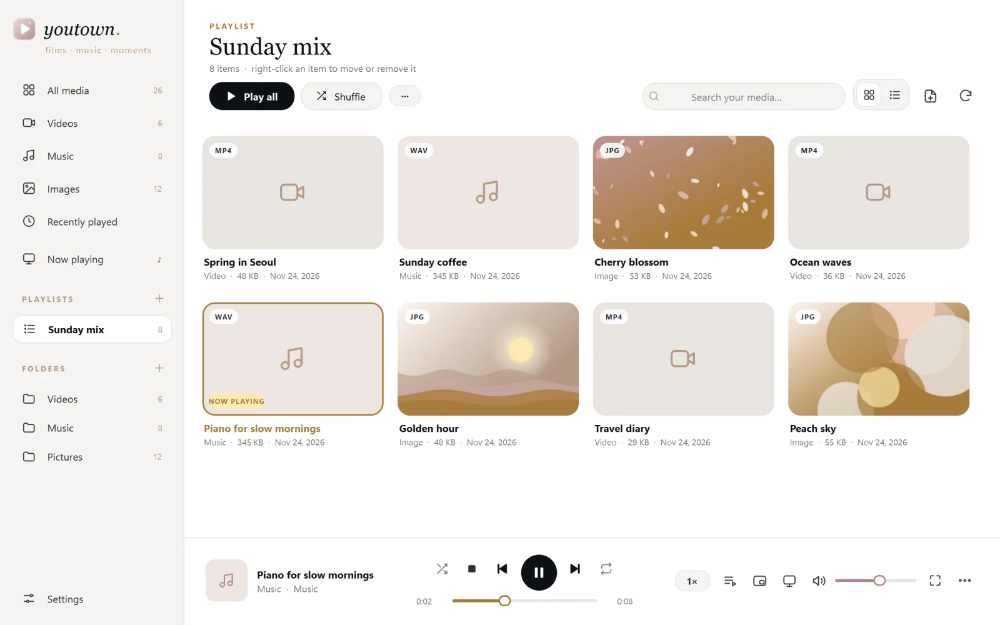
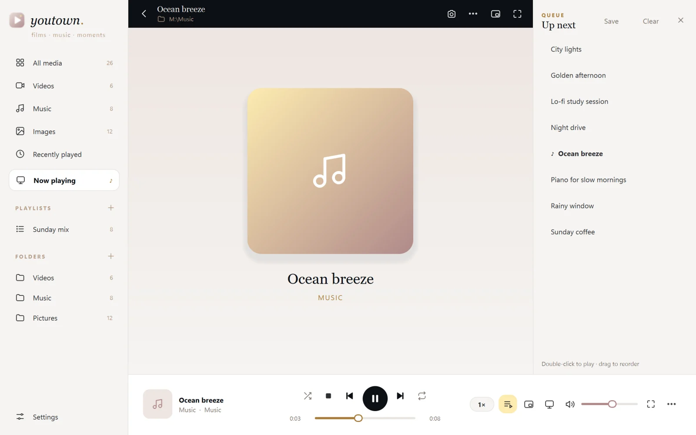

Your whole library, found
It scans your Videos, Music, Pictures, Downloads and Desktop, with real thumbnails, instant search and sorting.
YouTown finds every video, song and photo on your PC and plays them beautifully. It handles every format VLC does, and a little mini player stays on top while you work.


Powered by libVLC, so if VLC can play it, YouTown can too
Everything you need
All the essentials of a pro player, wrapped in a calm design that gets out of your way.
It scans your Videos, Music, Pictures, Downloads and Desktop, with real thumbnails, instant search and sorting.
Pop anything into a small rounded window that floats above your apps. Drag it, resize it, keep working.
Put videos, songs and photos in one list. Reorder them, shuffle them, and import or export .m3u.
Speed from 0.25× to 4×, A→B loop, frame-by-frame, subtitles and audio tracks, equalizer, snapshots.
Long videos resume where you stopped. Recently played keeps the things you love one click away.
A native Windows app with no browser engine inside. It opens in about a second and stays light on memory.
Library
Browse by videos, music or photos, or by folder. Switch between a calm grid and a detailed list.

Mini player
Press Ctrl + M and your video slips into a small floating window. It keeps playing without missing a beat.
Playlists
Build playlists from any mix of videos, songs and photos, then play them in your order or shuffle.

Music
Album art front and center, an up-next queue you can drag to reorder, and an equalizer when you want it.

Feels familiar
YouTown uses VLC's keyboard shortcuts, so your hands feel at home from day one.
Questions
Yes, completely free, with no ads, no account and no tracking. The source code is on GitHub.
No. YouTown includes its own copy of libVLC, the engine inside VLC, so it plays the same formats out of the box.
Yes. The installer isn't code-signed yet, so Microsoft SmartScreen shows a warning for new apps. Click More info, then Run anyway. It installs only for your user and doesn't need admin rights.
Open YouTown, go to Settings → Set as default app…. Windows Default apps opens, and you choose YouTown Player for the file types you want.
Yes. It keeps playing when minimized, and you can control it from the taskbar preview, your keyboard's media keys or the tray icon. You can also choose to keep it running in the tray when you close the window.
Use Settings → Apps → Installed apps → YouTown Player → Uninstall. Your media files are never touched.
Download YouTown Player and give your videos, music and photos a cozy new place to live.
Download for Windows